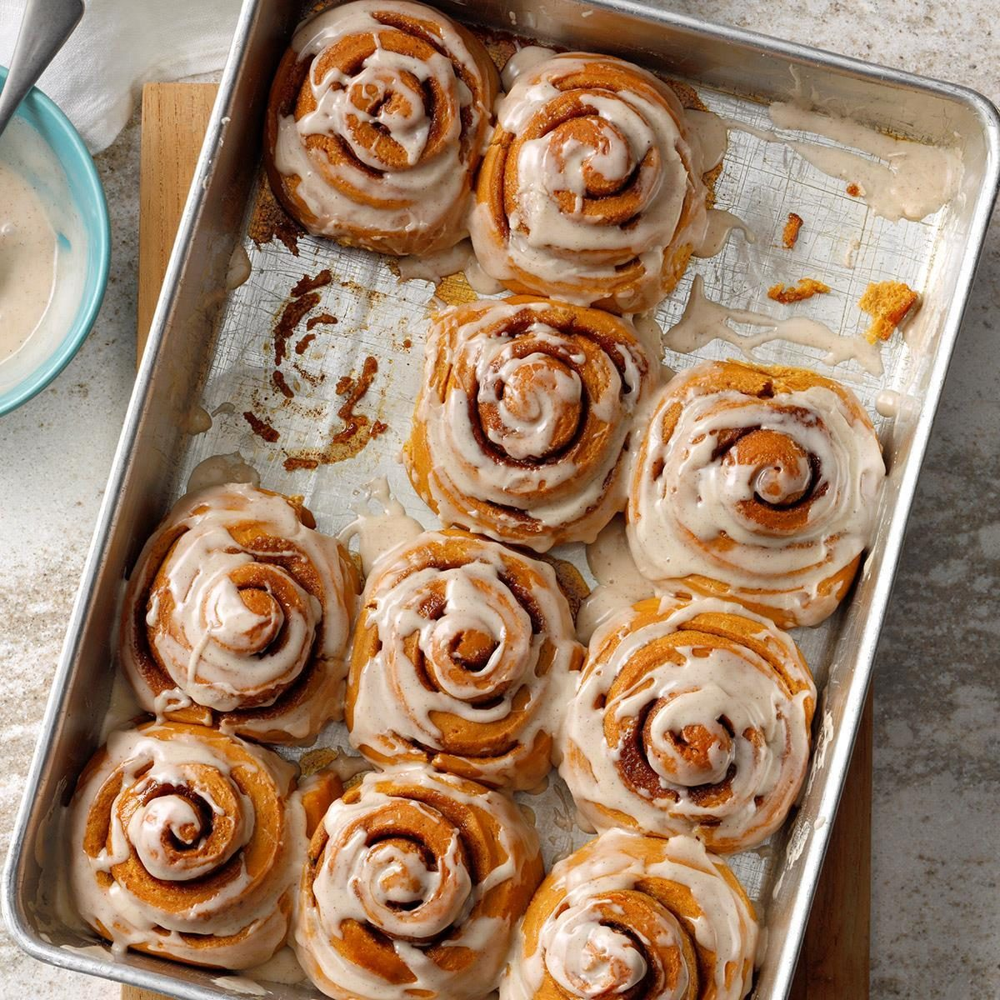

Santa's favorite Cinnamon Rolls
Description:
These are called "Clone of a Cinnabon. Apparently, because they must be
Cinnabon clones.
Ingredients:
Dough:
- 1 cup warm milk
- 2 eggs, room temperature
- 1/3 cup margarine, melted
- 4 1/2 cups bread flour
- 1 teaspoon salt
- 1/2 cup white sugar
- 2 1/2 teaspoons breach machine yeast
Filling:
- 1 cup brown sugar, packed
- 2 1/2 tablespoons ground cinnamon
- 1/3 cup butter, softened
Icing:
- 1 package cream cheese, softened
- 1.4 cup butter, softened
- 1.5 cups confectioner's sugar
- 1/2 teaspoon vanilla extract
- /8 teaspoon salf
1
Steps:
- Place ingredients in the pan of the bread machine in the order
recommended by the manufacturer. Select dough cycle; press Start.
- After the dough has doubled in size turn it out onto a lightly floured surface, cover and let rest for 10 minutes.
In a small bowl, combine brown sugar and cinnamon.
- Roll dough into a 16x21-inch rectangle. Spread dough with 1/3 cup butter and sprinkle evenly with
sugar/cinnamon mixture. Roll up dough and cut into 12 rolls. Place rolls in a lightly greased
9x13 inch baking pan. Cover and let rise until nearly doubled, about 30 minutes.
Meanwhile, preheat oven to 400 degrees F (200 degrees C).
- Bake rolls in preheated oven until golden brown, about 15 minutes.
While rolls are baking, beat together cream cheese, 1/4 cup butter,
confectioners' sugar, vanilla extract and salt. Spread frosting on warm
rolls before serving.